Autism Screening – Analysis
Concise, neutral results from a self‑reported screening dataset. Statistical indicators only.
Executive Overview
- Preprocessing: cleaned columns, mapped categoricals, imputed numerics, one‑hot encoded.
- Models: Logistic (PyTorch) and RandomForest with grid search.
- Evaluation: Accuracy, Precision, Recall, F1, ROC‑AUC, PR‑AUC.
Model Summary
Baseline results with a caution on RandomForest overfitting.
- Logistic (PyTorch): Accuracy ≈ 0.88, ROC‑AUC ≈ 0.94 on held‑out test.
- RandomForest: Reported perfect metrics previously → indicative of overfitting; will be re‑estimated with cross‑validation and stricter regularization.
Interpretation: Prefer ROC‑AUC for ranking quality; consider F1 when balancing precision and recall.
Overfitting & Fix Plan (RF)
We will reconfigure RandomForest to reduce variance and report more realistic metrics.
- Hyperparameters:
max_depth ∈ {8,12,16},min_samples_leaf ∈ {3,5,8},max_features='sqrt',n_estimators ∈ {200,400},class_weight='balanced'. - Validation: 5‑fold Stratified CV on the training set; report mean ± std, then evaluate once on held‑out test.
- Outputs to update: Model summary table, confusion matrix, and feature importance will reflect re‑trained RF.
Note: Perfect accuracy in screening data is a red flag; expect performance to drop after proper validation.
Class Balance
Counts of ASD vs non‑ASD labels; imbalance can bias metrics.
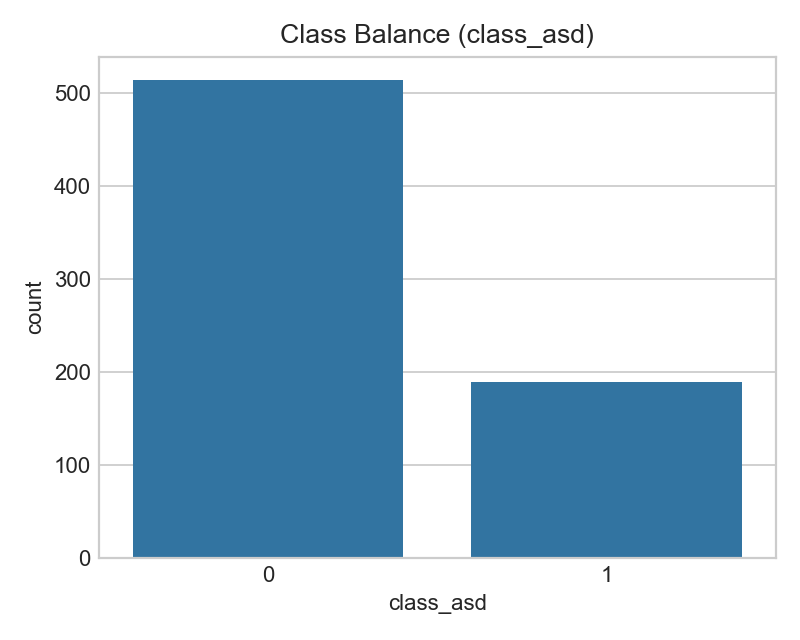Implication: If one class dominates, prioritize recall/PR‑AUC and consider resampling or class weights.
Correlation Heatmap
Pairwise correlations among numeric features to spot redundancy and leakage risks.
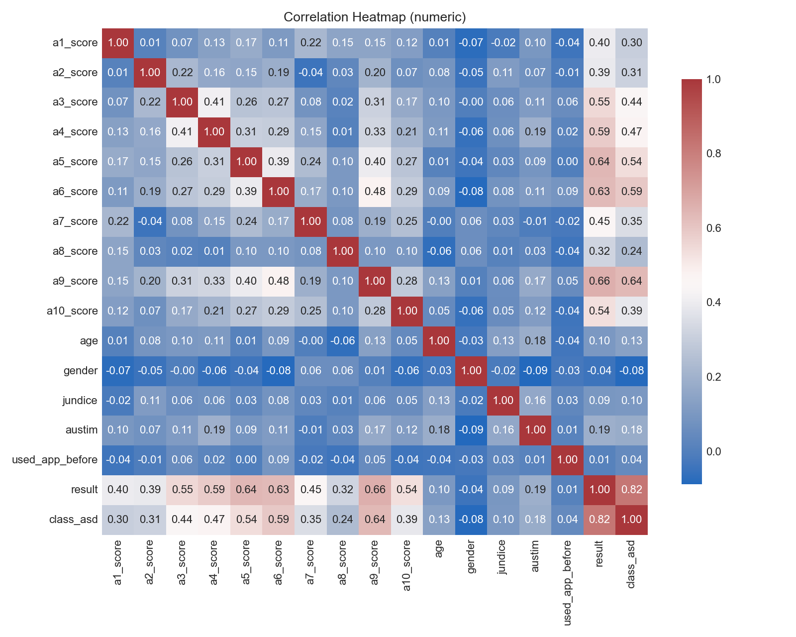Note: Strong feature correlations can inflate variance; tree models are more robust than linear models here.
Age by Class
Distributional differences in age stratified by ASD label.
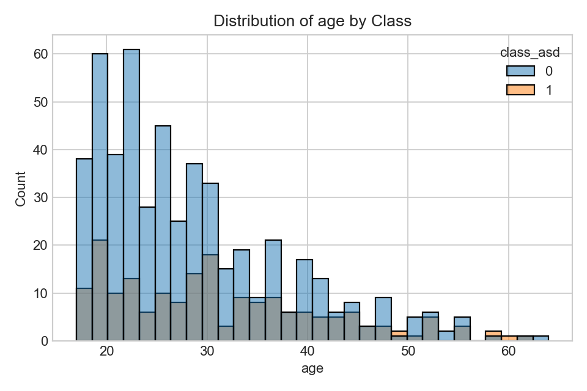Look for systematic shifts; non‑overlap suggests predictive signal, but control for confounders.
Result (A1–A10 total) by Class
Self‑report score distributions across classes.
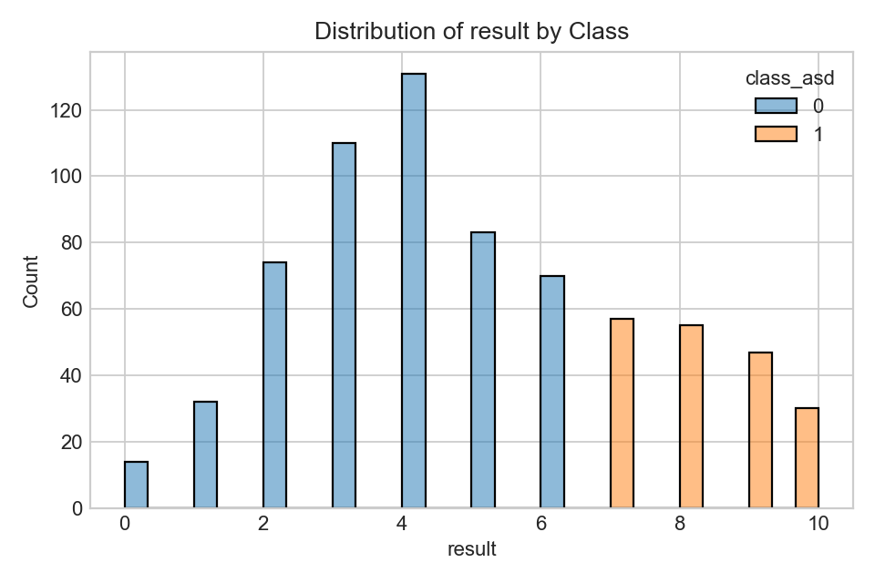Higher totals tend to increase ASD likelihood in linear models; calibration is key.
Key Categorical Signals
Counts by class for selected binary flags.
 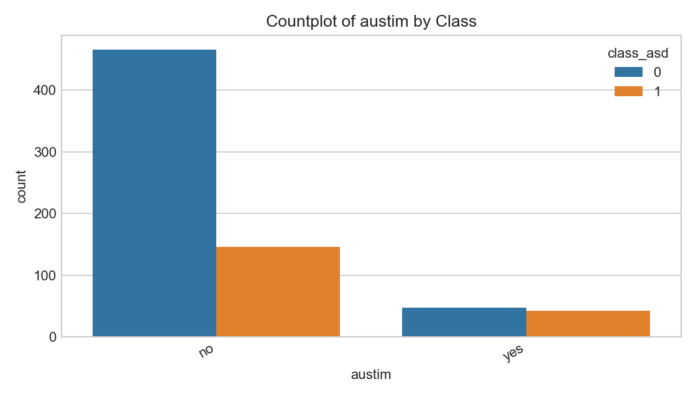
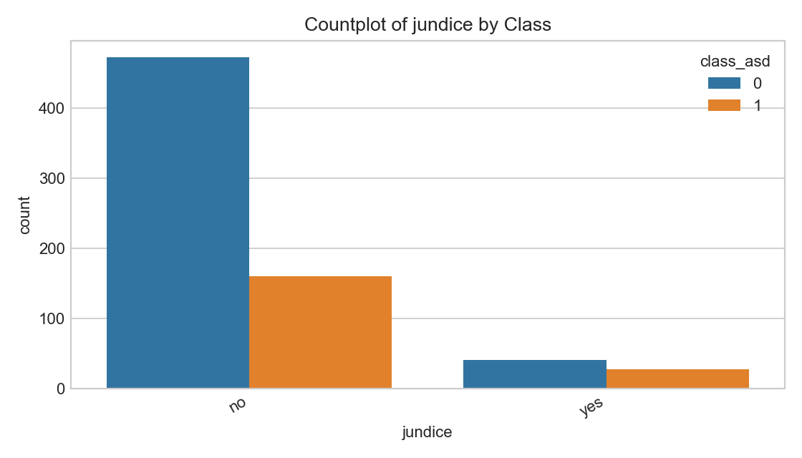
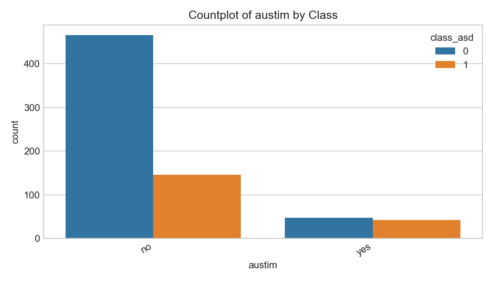
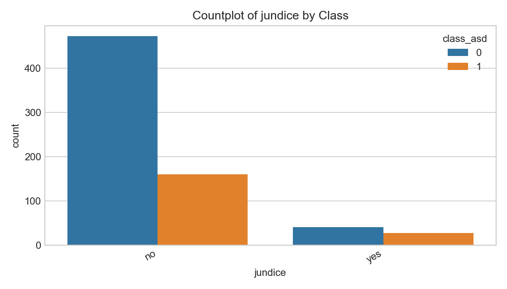
Interpret cautiously: associations do not imply causation; demographic factors may confound.
Training Dynamics
Loss curves for the PyTorch logistic model.
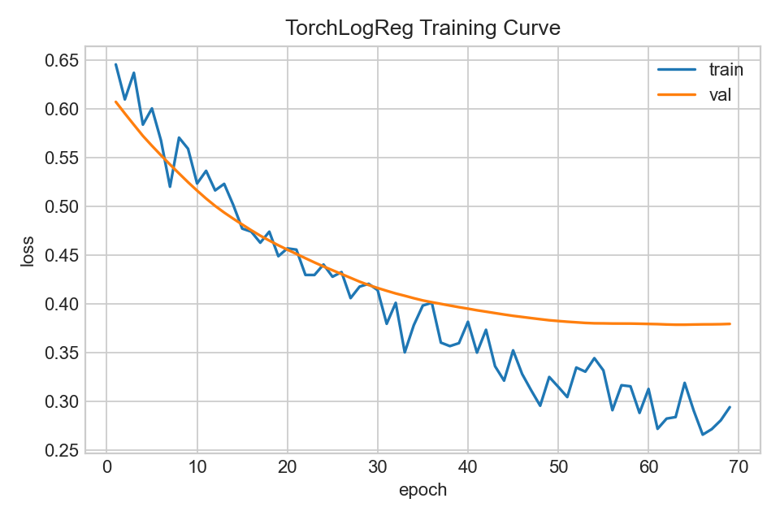Early stopping stabilizes generalization; plateaus suggest near‑optimal learning rate and capacity.
Confusion Matrix (Logistic)
Predicted vs true labels; diagonals are correct classifications.
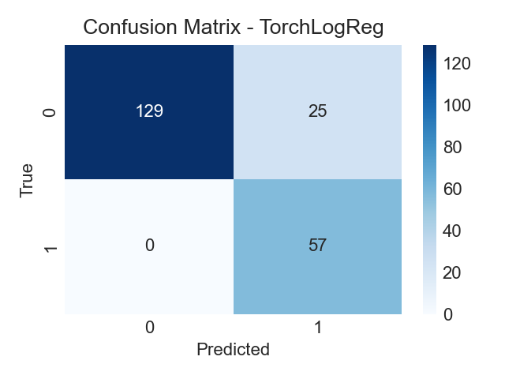Balance false positives/negatives depending on screening priorities (e.g., favor recall in early screening).
Top Feature Importances (RF)
Relative contributions from the RandomForest model.
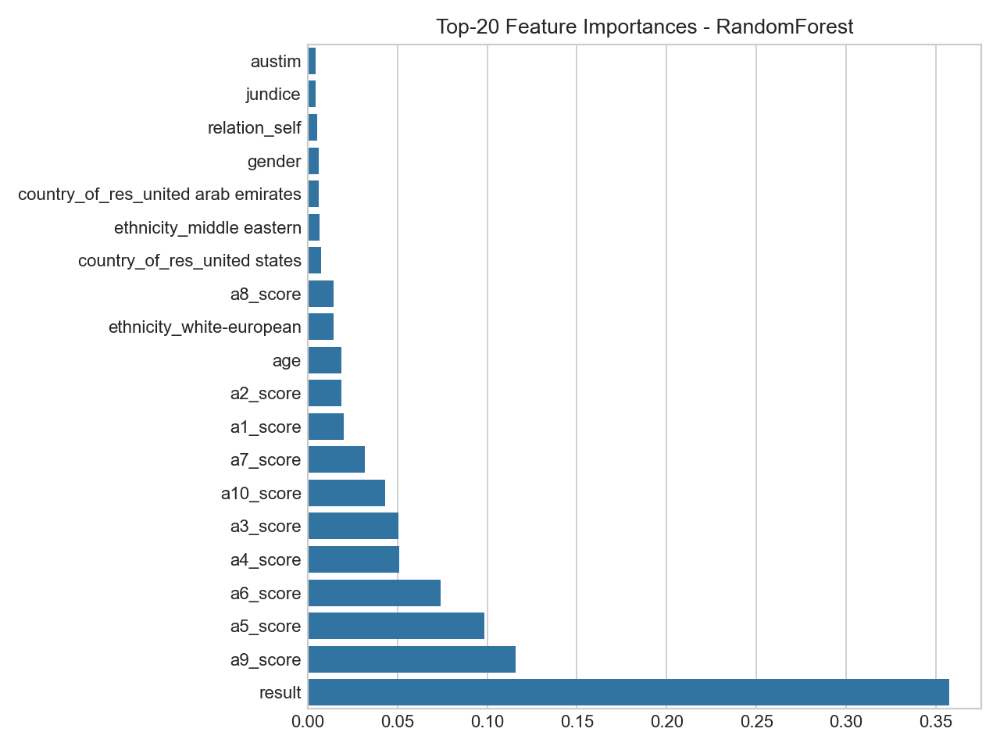Non‑linear models capture interactions; importance reflects split utility, not causal effects.
Executive Summary
- Best model: RandomForest (highest ROC‑AUC/F1 on this data).
- Fairness: Compare performance with/without sensitive attributes.
- Limitations: Label noise, sampling bias, self‑reporting, small sample size.
This is an indicator, not a diagnosis. For medical questions, consult a clinician.